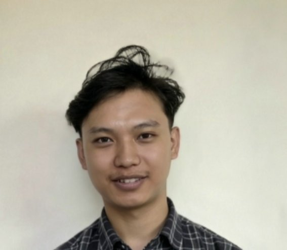
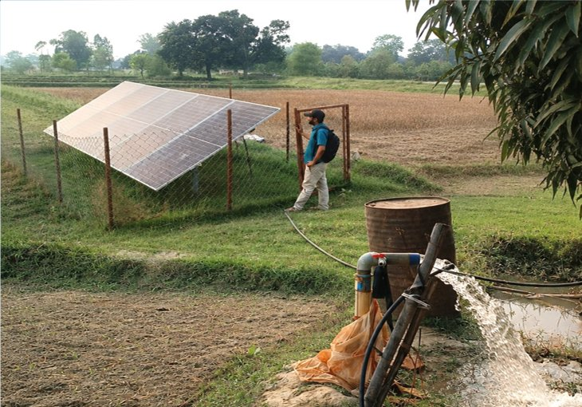

EnergyClimateCommunities
Clean energy,
stronger communities.
I work at the intersection of energy, climate policy and sustainable development. I’m particularly interested in how access to clean and reliable energy can build stronger, more resilient communities.
I graduated in Mechanical Engineering from Kathmandu University in 2024. Since then I have worked on energy planning, waste-to-energy, green hydrogen, carbon pricing and energy audits for AEPC, UNDP and the World Bank. I now coordinate the BEACON project at Prakriti Resources Centre.
In my free time, I enjoy playing badminton, reading books and listening to music.
More on my education and experience
